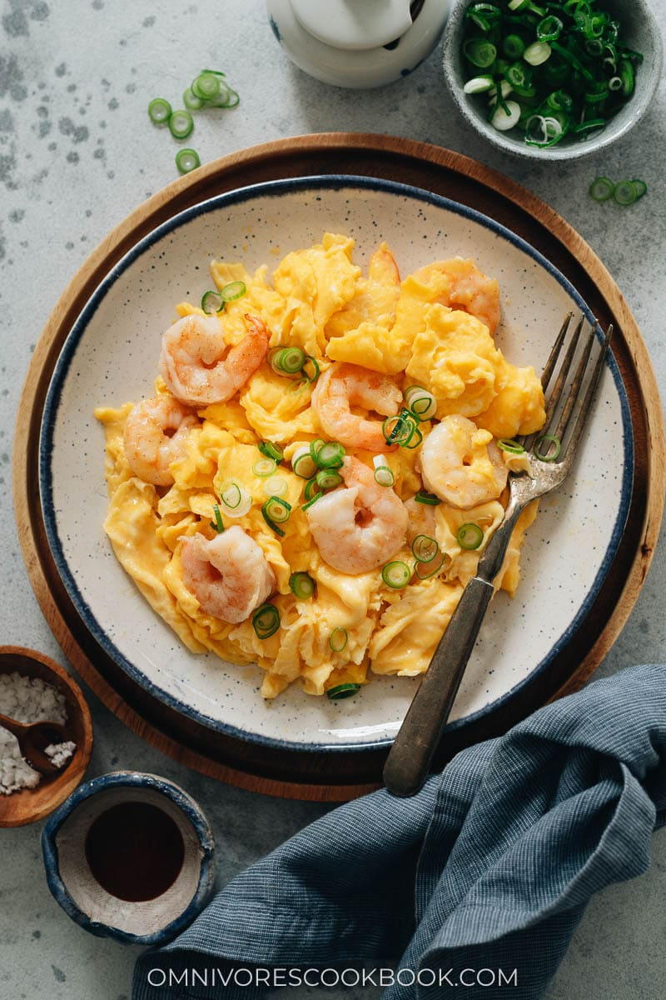

Scrambled egg rice with prawn

Description
Scrambled egg rice with prawn is a delightful dish that brings
together fluffy scrambled eggs, succulent prawns, and perfectly
seasoned rice. The dish is a harmony of textures, with the tender
eggs and juicy prawns complementing the slightly chewy grains of
rice. Often enhanced with aromatic ingredients like garlic, spring
onions, and a dash of soy sauce, it delivers a comforting and
flavorful experience. This quick and versatile meal is loved for
its balance of protein, carbs, and umami, making it a favorite for
casual lunches and dinners alike.
Ingredients
- shrimp
- eggs
- cooking wine
- cornstarch
- pepper
- sugar
- salt
- oil
Steps
- Marinate the shrimp with an appropriate amount of cooking wine,
cornstarch, pepper, sugar, and salt for a while. Heat oil in a
pan and fry the shrimp until cooked through on both sides.
- Mix the egg with salt and diluted cornstarch until well combined.
Mix the egg mixture with the cooked shrimp.
- Heat oil in a pan, then pour in the shrimp and egg mixture. On
low heat, continuously push the mixture toward the center until
the egg is fully set. Remove from the pan and transfer to a
plate.